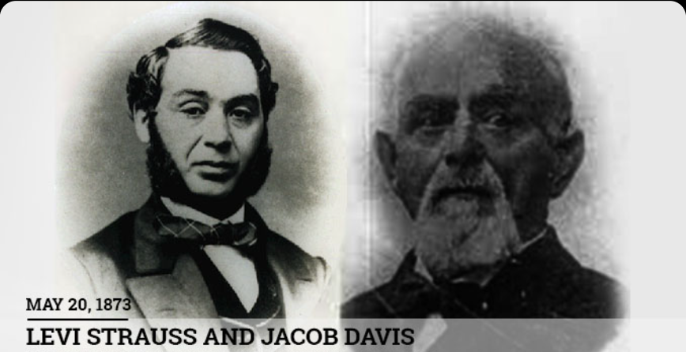
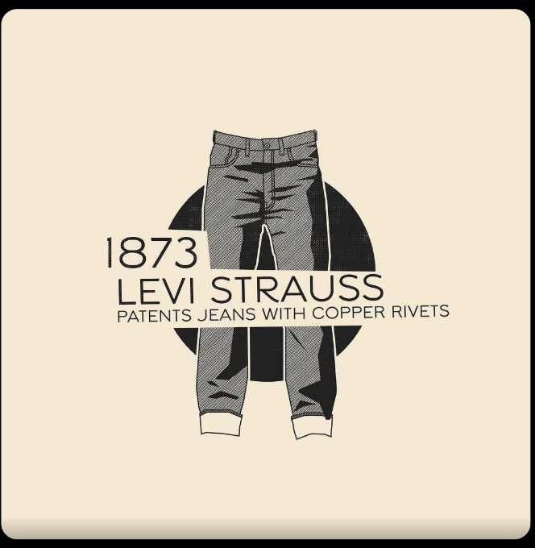

Historical Context
In 1870, Jacob Davis was a tailor in Reno, Nevada, serving miners whose pants fell apart faster than he could sew them. He had no patent lawyer, no capital, and no plan beyond the next repair job. What he had was a workbench, a hammer, and a box of copper rivets borrowed from the horse-blanket trade. On May 20, 1873, he and a dry-goods merchant named Levi Strauss were granted Patent No. 139,121. What followed became the most-worn garment in human history.
The copper rivet weighed almost nothing. It sat on Jacob Davis's workbench in Reno, Nevada, in the autumn of 1870 among scissors and thread spools and the particular debris of a man who made his living repairing things other people had broken. Davis used rivets for horse blankets. For wagon covers. For the heavy canvas goods that the mining economy chewed through at a rate that kept tailors in business and miners perpetually annoyed.
He picked one up. He turned it in his fingers.
The woman standing across the workbench from him was a regular customer — her husband, a laborer, had the gift of destroying his pants with industrial efficiency. The pocket corners went first. Always the pocket corners. A man hauling rock all day puts his hands in his pockets roughly ten thousand times, and standard-construction denim, held together by thread alone, was simply not built for the job. She had been in before. She would be in again. Unless.
Davis set the rivet against the pocket corner of a fresh pair of pants. He picked up his hammer. He drove it through.
He did not pause to reflect that he had just invented something. He was a tailor. He had a problem. He had a rivet. The math was straightforward.
What came next was not.
The Man Who Saw What Thread Could Not Do
Jacob Davis — born Jacob Youphes in Riga, Latvia — had spent a significant portion of his adult life moving from place to place in the American West, trying to find the thing he was good at in a country that kept offering new options. He arrived in the United States in the 1850s or 1860s, worked his way through various cities, and eventually landed in Reno as a tailor serving the working-class community that had grown up around Nevada's mining economy.
Reno in 1870 was not Paris. It was not even San Francisco. It was a railroad town and a supply depot, full of men whose relationship with their clothing was purely functional and frequently violent. Miners, laborers, teamsters — these were not people browsing for fashion. They needed pants that stayed in one piece while they bent, lifted, dragged, and climbed their way through a shift. Standard pants, held at the stress points by nothing but stitching, failed them repeatedly. This was so routine that nobody thought of it as a problem to be solved. It was just the cost of having a body and using it.
Davis thought about it differently. He was a craftsman, which meant his mind worked in materials and solutions rather than abstractions. When he saw a failure point, he looked for what he had on hand that might fix it. He had rivets. He used them on canvas and leather. Denim was not so different from canvas. Pocket corners were not so different from the stress points on a horse blanket.

The riveted pants worked. Not a little — dramatically. Word spread through Reno's working community the way useful things always spread: person to person, job site to job site, with the quiet authority of something that simply does not fall apart when everything else does. Davis began selling them. By his own account, he sold around two hundred pairs between late 1870 and the summer of 1872.
And then he started to worry.
Because here is the thing about being a craftsman who has stumbled onto something genuinely useful: you are very bad at keeping it secret. The rivets were visible. Anyone who saw a pair of Davis's pants could see what he had done. And anyone who could see what he had done could do it themselves. Davis had no patent. He had no protection. He had, in the language of a man watching his advantage evaporate, a problem.
He also had $68 standing between him and a solution. That was the cost of filing a patent application. Davis did not have it.
The Letter That Changed Everything
July 1872. Davis sat down to write to a man he had never met.
Levi Strauss ran a dry goods wholesale business in San Francisco — Levi Strauss & Co. — that supplied merchants across the American West, Davis among them. They had a commercial relationship: Davis ordered fabric and supplies; Strauss's company fulfilled the orders. They were, in the language of modern business, vendor and customer. They were not partners. They were not friends. Davis was a tailor in Nevada asking a merchant in California to co-own his invention because he could not afford the paperwork.
The original letter is held today at the Smithsonian's National Museum of American History, which tells you something about how that particular long shot turned out.

Davis laid out the situation with the directness of a man who had no good options and knew it. He explained the riveted pants. He explained that he had been selling them for nearly two years and that others were beginning to notice. And then he wrote the sentence that has been quoted in fashion history ever since, with his original spelling intact:
"I have a great fear that if I don't get out a patent for it some one else will."
I have a great fear. This is not the language of an entrepreneur pitching a disruptive innovation. This is the language of a man who is scared. Who has built something good and can feel it slipping away from him because he is $68 short. He was not asking Strauss to invest in a vision. He was asking him to split the cost of not losing something he had already made.
Strauss read the letter and, in the manner of someone who has spent two decades supplying miners and understands immediately what a product that doesn't fall apart means to people who destroy things for a living, said yes.
He was the supply chain man, not the inventor. His genius was not in seeing the rivet — Davis had done that — but in seeing Davis. Here was a craftsman who had solved a real problem, who had two years of sales proving the solution worked, and who needed exactly one thing that Strauss had in abundance: infrastructure. Distribution. Capital. The ability to turn a tailor's innovation into a manufacturing operation.
The calculation was not complicated. Strauss agreed to fund the patent application. The partnership was formed across five hundred miles and a handshake conducted entirely by mail.
Patent No. 139,121

On May 20, 1873, the United States Patent Office granted Patent No. 139,121 for an "Improvement in Fastening Pocket-Openings."
The inventors listed were Jacob W. Davis and Levi Strauss. Both names. Equal billing. A Latvian-born tailor from Reno and a Bavarian-born merchant from San Francisco — both immigrants, both Jewish, both men who had come to the American West looking for something and found it in the unlikely partnership of a hammer and a piece of hardware borrowed from horse blanket manufacturing.
Davis moved to San Francisco to supervise production. The enterprise scaled. Within a few years, the riveted waist overalls — what we would call jeans — were being manufactured in volume, sold across the West, and beginning their long journey from workwear to the most ubiquitous garment in the history of human clothing.
None of this was planned. Davis did not set out to transform fashion. He set out to stop pocket corners from tearing. Strauss did not set out to build a cultural institution. He set out to turn a good investment into a return. The blue jean was not designed. It was improvised, under pressure, by a man who was worried, using a component that happened to be within arm's reach.
The rivet was an industrial object playing a cameo in someone else's industry. It had no idea what it was getting into.
The Component That Outlasted Everything
Levi Strauss died in 1902. Jacob Davis died in 1908. The patent they shared expired long before either of them did — patents only last seventeen years, and competitors moved in the moment protection lapsed. The mining economy that had created the market for their pants shifted, diversified, and eventually declined. The laborers and teamsters who were their original customers became, over the following century, a memory.
The rivet remained.
It held through two world wars, during which denim became the uniform of American industrial labor and the symbol of a country that built things. It held through the 1950s, when James Dean put on a pair of jeans in Rebel Without a Cause and transformed workwear into attitude. It held through every decade of fashion that followed — the bell-bottoms, the acid wash, the skinny jeans, the wide-leg revival — because the pocket corners still needed reinforcing and the copper rivet still did the job better than anything else anyone had thought of.
Here is the number that earns a moment of silence: there are approximately four billion pairs of jeans on earth right now. Each one has rivets. Not one of them would exist without a tailor in Reno who couldn't afford $68 and reached for what was on his workbench.
Davis's genius was not invention. It was transfer. He saw a solution in one context and moved it to another. He did not think about disruption or innovation or market positioning. He thought: the pocket corners keep tearing, I have copper rivets, copper rivets don't tear. That lateral leap — the willingness to pick up what was at hand and apply it somewhere new — is the entire story of how blue jeans came to exist.
The $68 he didn't have is almost beside the point. The more interesting number is the one he wrote to a stranger in San Francisco. Because that letter — scared, direct, a little desperate, entirely right — is the moment a tailor's workbench solution became a business, and a business became something that outlasted everyone involved.
The rivet held. That was always the point.
Sources
- Smithsonian National Museum of American History, Jacob Davis and Levi Strauss collection, including Davis's original 1872 letter and Patent No. 139,121.
- Lynn Downey, Levi Strauss: A Pioneer of Commerce and Community (Arcadia Publishing, 2012).
- US Patent Office, Patent No. 139,121, May 20, 1873. Available via Google Patents / USPTO database.
- Levi Strauss & Co. Archives, San Francisco.